|
В. И. ЕЛИСЕЕВ ВВЕДЕНИЕ В МЕТОДЫ ТЕОРИИ
ФУНКЦИЙ ПРОСТРАНСТВЕННОГО КОМПЛЕКСНОГО ПЕРЕМЕННОГО |
|
1.3.1. Связность комплексного пространства
Пространственные комплексные координаты, введенные в исследование, по-новому определили точку в пространстве связность, непрерывность этого пространства.
Комплексная ось
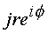 является естественным продолжением в построении системы комплексных координат, ибо к плоскости (z) восстановлена плоскость, только свернутая в цилиндрическую поверхность с радиусом корня из нуля. При построении комплексной плоскости (z) оси x и y топологически равноценны и выступают как обозначения, которые можно переставить. Продолжая этот принцип к плоскости (z), была восстановлена также плоскость (s ), свернутая в цилиндр, на поверхности которого остаются в силе все метрические соотношения, заданные на плоскости: сумма углов треугольника по прежнему равна 180 град., равными остаются расстояния между вершинами и величина площади. Гауссова кривизна цилиндра равна нулю. В этом смысле декартова система координат становится совершенно непригодной из-за того, что третья ось не несет топологии плоскости, к которой она восстановлена.На внешней поверхности выколотой оси
js можно получить все точки плоскости (z). В цилиндрических координатах, каждая точка n имеет окрестность g r, с радиусом 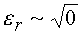, которая расположена от плоскости (z) на расстоянии r. (см. рис. 4, 5, 6, 7). Поверхность выколотой оси js содержит точки, у которых угол 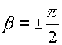. Тогда согласно формуле (1.5.) можно записать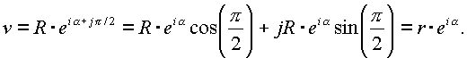
Поэтому изолированное направление ±
j arctg(i) следует считать заключенным внутри этой выколотой оси, а бесконечное множество делителей нуля n д образует внутреннюю поверхность выколотой оси. Все это бесконечное множество, расположенное на конусе с мнимой поверхностью в цилиндрической системе координат, собирается в выколотую ось в сферических координатах. Мнимый конус-фильтр состоит из окрестностей точек g r, поверхность которых повернута относительно поверхности обычных точек n на p /2 согласно условию (1.8.).Точка делителей нуля в цилиндрических координатах имеет место (рис. 8),
однако в нее нельзя провести радиус-вектор, поэтому поверхность, образованную множеством этих точек, считаем мнимой. Эта поверхность образована множеством не суммируемых, взаимно перпендикулярных векторов с равными по величине модулями и имеющих начало в равных точках окрестности нуля , повернутых одна относительно другой на угол p /2.Из классического анализа известно, что для получения взаимно однозначного отображения необходимо из пространства координат исключить некоторую область: в простейшем случае это нуль, в сферических координатах это линия, в комплексной z - плоскости это окрестность нуля.
Согласно формуле (
1.5.) сферические комплексные координаты выражаются в виде: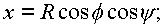
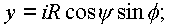
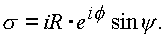
Якобиан отображения пространства
n в пространство n (R, f , y ) будет равен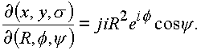
Формула показывает, что якобиан равен нулю в следующих случаях
: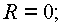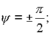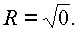
Первый случай тривиален, второй рассмотрен выше и указывает на исключение из рассмотрения поверхности выколотой оси. Третий случай говорит о том, что если из пространства (n ) выбросить выколотую ось радиуса
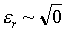, то вследствие наличия в якобиане квадрата радиуса на пространства одновременно выбрасывается все множество делителей нуля n д, которые характеризуются углами y , равными изолированному направлению arctg i.Исключение из пространства выколотой оси равносильно исключению нуля в z-плоскости. Наличие в пространстве (n ) выколотой оси ставит по-новому вопрос о связности пространства кривых и поверхностей в нем.
Для реализации интегральных теорем Коши необходимо рассмотреть вопрос об односвязности поверхности, которая натягивается на циклическую пространственную кривую. В комплексном пространстве решающее значение имеет характер кривой и ее расположение относительно выколотой оси. Реализация естественно зависит и от подынтегральной функции.
В классическом анализе связность пространства определяется теоремами Стокса и Остроградского. В z-плоскости реализована только теорема Стокса. Для применения теоремы Стокса требуется, чтобы Контур и поверхность, которая натянута на этот контур, целиком лежали в области, где выполнены соответствующие условия. Теорема Остроградского остается в силе и для объема с порами (рис. 15). Под термином "пора" понимается ограниченная область, целиком лежащая в рассматриваемой области и исключенная из рассмотрения.
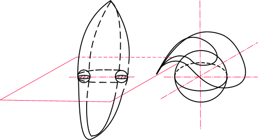
Рис. 15. Поры в пространстве.
На рис. 16, 17 даны примеры из классического анализа односвязного и многосвязного.
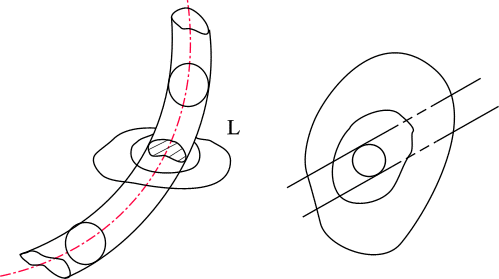
Рис. 16. Кривая
a, не стягиваемая в точку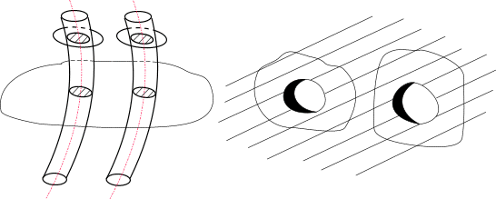
Рис. 17. Пример многосвязного пространства
В связном пространстве контур стягивается в точку непрерывным образом, причем и сама точка принадлежит рассматриваемой области. В односвязном, двухсвязном и многосвязных пространствах контур z не может быть стянут в точку непрерывным образом, как это показано на рис. 16, 17, не пересекая при этом границы области. Это примеры общего логического плана.
В комплексном пространстве выколотая ось, стянутая из точек мнимой поверхности конуса выступает как бесконечная трубка радиуса
Кривые С
0, С1, С2 (рис. 19), охватывающие выколотую ось, нельзя стянуть в точку радиуса ноль, так как ноль в пространстве имеет окрестность радиуса корня из нуля.Кривую С
0 можно стянуть в точку, так как она охватывает выколотую ось (рис. 19).Кривая С
1, лежит в плоскости, параллельной плоскости (z), и стягивается в окружность радиусаКривая С
3 является простейшей пространственной кривой, на которую можно натянуть непрерывным образом без точек самопересечения поверхность так, чтобы внутри содержался объем.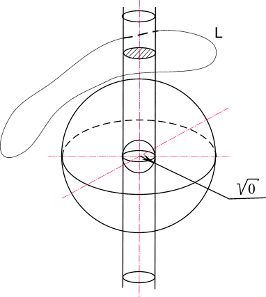
Рис. 18. Изолированная ось в комплексном пространстве, обуславливающая его связность.
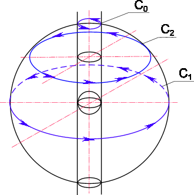
Рис. 19. Кривые
C0, C1, C2, стянутые в точку из-за наличия в комплексном пространстве изолированного направления.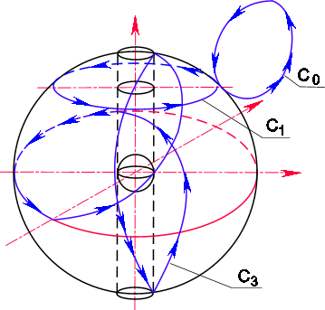
Рис. 20. Кривая
C0, стянутая в точку, кривая С1, не стянутая в точку, и кривая С3 - простейшая циклическая кривая в пространстве.Простейшей комплексной кривой в z-плоскости является окружность. Натянуть на окружность поверхность так, чтобы в ней был заключен объем, не представляется возможным.
Контур С
3 является простейшим пространственным контуром, он состоит из кривой, идущей по внешней поверхности сферы, и кривой, идущей по внешней поверхности выколотой оси.Пространство (n ) может быть сжато в комплексную плоскость с выколотыми осями по
z, js Замкнутая кривая C4 будет обходить выколотые оси по полуокружностям.Кривая
C состоит из двух окружностей, лежащих во взаимно перпендикулярных плоскостях (см. рис. 21).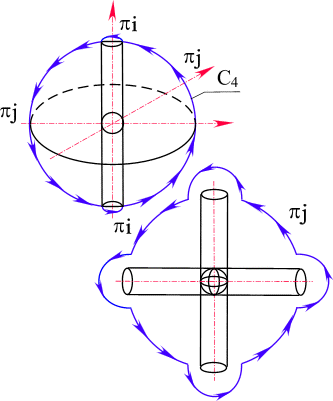
Рис. 21. Пространственная кривая C4, охватывающая две изолированные оси. Внутренний контур кривой C3 можно деформировать так, что он пойдет по внутренней поверхности сферы, при этом образуется оболочка толщиной d (рис. 17).
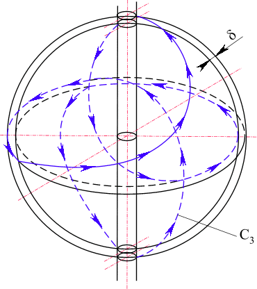
Рис. 22. Деформация простейшей пространственной кривой
C3 с выделением поверхностного слоя d .Оболочку можно увеличить до толщины
S, как это показано на рис. 23. В этом случае пространство будет заключено между двумя сферическими поверхностями, соединенными между собой цилиндрической поверхностью выколотой оси. Иными словами, в любом случае простейшей поверхностью становится тороидальная поверхность.Дадим определение кривой
C3 в пространстве (n ), которую назовем главной простой кривой в пространстве.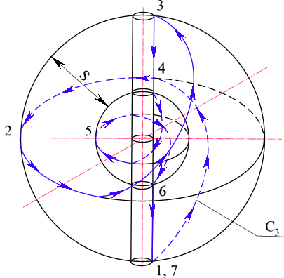
Рис. 23. Деформация простейшей пространственной кривой С3 с выделением шарового слоя S.
Определение. Простой кривой в пространстве трех (четырех измерений будем называть кривую С
3 (рис. 20) которая получается деформацией из плоской кривой длины 2p R0, путем натягивания ее на сферу с выколотым e -туннелем, так, что часть кривой, равная 2Re , проходит через e -туннель, а остальная часть, равная 2p R0-2Re , проходит по поверхности сферы так, что сфера при фиксированном R0 имеет наибольший радиус. При этом точка n , проходящая один раз замкнутую кривую C3, делает в e -туннеле и по поверхности сферы в исчислении по углу f два полных оборота 4p , а по углу y один оборот 2p .Если двигаться по кривой
C0 (рис. 20), то из точки вернемся в ту же точку без изменения аргументов.Кривые
C0, C1, C2 (рис. 19) лежат в плоскости, параллельной z-плоскости, поэтому для них y =const и при обходе изменяется только аргумент f , добавляя к своему значению за один оборот. 2p .Движение по кривой
C3 (рис. 20) дает приращение аргументов 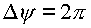, 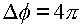. В общем случае, кривая Сi может иметь различные исчисления по аргументам f , y в зависимости от того, как она проходит выколотую ось.Мини оглавление:
[0], [1.1.1, 1.1.2, 1.1.3, 1.1.4, 1.1.5, 1.1.6, 1.1.7, 1.1.8, 1.2, 1.2.1, 1.2.2, 1.2.2.a, 1.2.2.b, 1.2.2.c, 1.2.2.d, 1.2.2.e, 1.2.2.f, 1.2.2.g, 1.2.2.h, 1.2.3, 1.3.1, 1.3.2, 1.3.3, 1.3.4, 1.3.5, 1.3.6, 1.4.1, 1.4.2, 1.5, 1.6, 1.7.1, 1.7.2, 1.7.3.1, 1.7.3.2, 1.7.3.3, 1.7.4.1, 1.7.4.2, 1.8.1], [2.1, 2.2],[3.1, 3.2, 3.3, 3.4.1, 3.4.2, 3.4.3, 3.4.4, 3.4.5],[4.1, 4.2, 4.3, 4.4],[5.1, 5.1.Рис.52, 5.2, 5.3, 5.4, 5.4.Т1, 5.4.Т2, 5.4.Т3, 5.5.1, 5.5.2, 5.5.3, 5.5.4],[6.1.1, 6.1.2, 6.2.1, 6.2.2, 6.2.3, 6.2.4, 6.2.5, 6.3, 6.4.1, 6.4.2, 6.5.1, 6.5.2],[7.1, 7.2, 7.3, 7.4, 7.5, 7.6, 7.7.1, 7.7.2, 7.8.1, 7.8.2, 7.8.3, 7.9],[8.1, 8.2.1, 8.2.2, 8.3, 8.4, 8.5, 8.6, 8.6.T1, 8.7, 8.8.1, 8.8.2, 8.8.3, 8.9.1, 8.9.2, 8.9.3, 8.10, 8.10.T2, 8.10.T3],[9.1, 9.2, 9.3, Рис.88, 89, 90, 91, 92, 93, 94, 95, 96, 97, 98, 99, 100],[10.1, 10.2, 10.3, 10.4, 10.5, 10.6, 10.7, 10.8, 10.9, 10.10, 10.11, 10.12, 10.13, 10.14, 10.15.1, 10.15.2, 10.16.1, 10.16.2, 10.17, 10.18],[11]
Размещенный материал является электронной версией книги: © В.И.Елисеев, "Введение в методы теории функций пространственного комплексного переменного", изданной Центром научно-технического творчества молодежи Алгоритм. - М.:, НИАТ. - 1990. Шифр Д7-90/83308. в каталоге Государственной публичной научно-технической библиотеки. Сайт действует с 10 августа 1998.
E-mail: mathsru@gmail.com